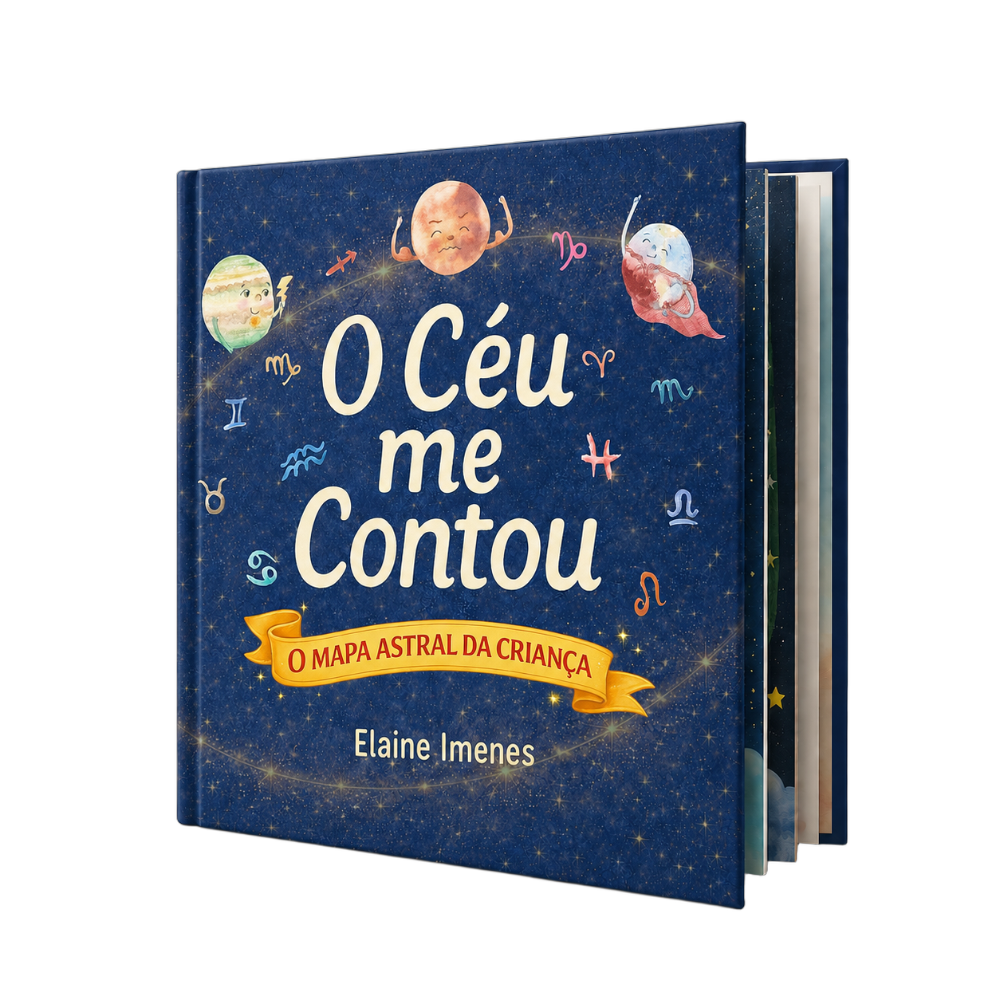

Totalmente personalizado
Cada livro é uma peça única, escrita e ilustrada exclusivamente a partir do mapa natal de cada criança.
Um mapa astral transformado em um livro ilustrado personalizado para o seu filho.
Uma experiência afetiva que une astrologia, narrativa e ilustração para transformar o mapa natal da criança em uma lembrança para toda a vida.

Livro O Céu Me Contou
Muito além de um relatório técnico, cada exemplar nasce de uma interpretação sensível do mapa natal da criança. Transformamos posições planetárias e potenciais latentes em uma narrativa poética e ilustrações delicadas que remetem à suavidade da aquarela. É o registro eterno do céu no momento exato em que uma nova jornada começou.
Clique no livro para folhear. As páginas abaixo são de um exemplar já produzido — o seu será inteiramente diferente.
Uma jornada que transforma a posição dos astros no momento do nascimento em uma narrativa ilustrada e única para seu filho.
Você envia os dados exatos do nascimento: dia, hora e local para iniciarmos a leitura.
Nossa astróloga realiza uma conversa virtual com a família para conhecer a criança, sua história e os símbolos presentes no mapa natal.
A partir da consulta e da leitura astrológica, os potenciais e símbolos do mapa são transformados em uma narrativa sensível e autoral.
Ilustrações exclusivas em aquarela dão vida física aos elementos do céu da criança.
O livro artesanal chega até você, pronto para atravessar o tempo com sua família.
Cada livro é uma peça única, escrita e ilustrada exclusivamente a partir do mapa natal de cada criança.
A interpretação do mapa é feita com cuidado pela astróloga, enquanto o visual é pensado artisticamente pela filha, transformando o céu da criança em memória afetiva.
O céu de nascimento traduzido para uma linguagem poética, acessível e cheia de simbolismo leve.
Mais que um livro, um tesouro de memórias que acompanhará a criança por toda a vida.
R$ 900
O valor inclui a consulta astrológica da criança com a pessoa responsável e o livro físico em capa dura, feito inteiramente a partir dessa conversa.
Quero comprar!
A partir dos dados de nascimento da criança (data, hora exata e cidade) interpreto o mapa natal e traduzo seus símbolos em uma narrativa poética. Cada traço e cada palavra são escolhidos para refletir a essência única e o caminho singular do pequeno.
Sim! O valor inclui uma consulta feita com os pais para conversarem sobre a criança, onde explico o mapa natal da mesma. Após essa consulta, o livro é enviado para o endereço cadastrado.
Não. O livro foi criado para ser uma experiência afetiva e literária. A linguagem é acessível, lúdica e focada no desenvolvimento emocional, transformando conceitos técnicos em metáforas que pais e filhos podem explorar juntos.
Como se trata de um trabalho autoral e personalizado, o processo de escrita e ilustração leva entre 15 a 20 dias úteis após a consulta. Após esse período, o exemplar entra em produção física e é enviado para o seu endereço com todo o cuidado que uma memória merece.
Com certeza. O Céu Me Contou é um presente inesquecível para chás de bebê, nascimentos e aniversário. Você pode adquirir um cartão-presente para que os pais forneçam os dados da criança e agendem a consulta quando preferirem.
Me chame no WhatsApp e conversamos sobre como começar.
Quero comprar!